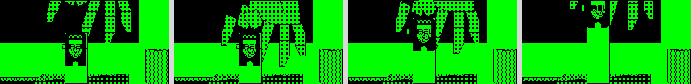
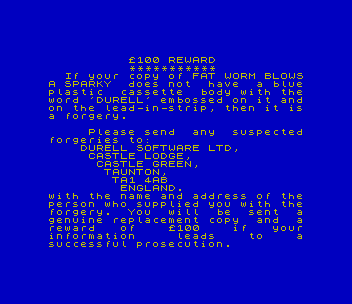
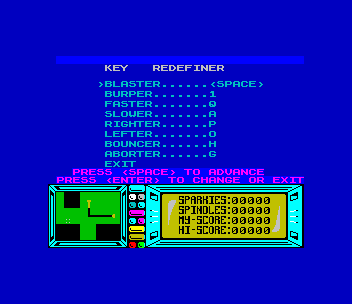
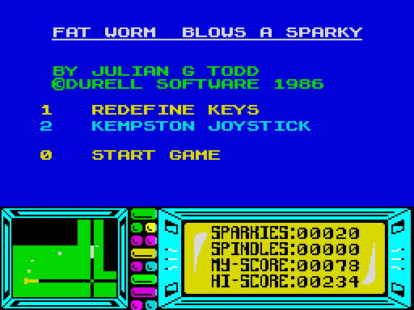

01 · The view
Every block is two rectangles
The board is seen from straight above, and a block shows its sides only
when it is away from the middle of the picture. The game gets that look from
one table and one multiply.
A block is stored as an outline and two heights. The game draws the
outline twice, once at the height of the block's foot and once at the height
of its top, and magnifies each copy about the middle of the view by an amount
the table gives for that height. A higher rectangle grows more, so a block's
top slides away from its foot as the block nears the edge of the picture. The
walls are the gaps between the two rectangles. A wall is drawn only where the
top's edge has moved inward past the foot's, which happens on the side facing
the middle.
The view, rebuilt from the board's own bytes with a
port of the game's projection ($811E, $81DB).
Move with the buttons, or click the picture and use the arrow keys. The
port was held against the game's code in a Z80 simulator for 102,656
values of the multiply and 3,000 outlines, with no difference. The
filling is the page's own: it uses the game's pattern bytes
($80CB) and draws lower things first, which is simpler than
the game's ordering. The worm, the creatures, and the spindles' pictures
are not drawn, a spindle is a small ring, and the seven boxes cut on a
diagonal are drawn whole.
The table is 128 bytes at $6300, one for every two units
of height. A coordinate v becomes v × (128 + byte) / 128. The bytes
stay within 1.2 of 128h / (384 − h), which is the perspective of an
eye 384 units above the board, where a square of the board is 256 units
across.
The view never turns. Steering turns the worm, and the board only
slides under it.
| Height | Table byte | Magnified by |
|---|
02 · The board
The board: 129 squares, with two links a flat board could not have
The board is a linked list. Each square names its four neighbours by
address, and the game keeps track of only the 5 by 5 squares round the worm.
Laid out from those links, the squares fit a grid 16 wide and 22 deep, except
at two links. Going east from one square marked A arrives at the other A,
which the grid puts 13 columns away, and the two squares marked B are joined
the same way across 7 columns.
All 129 squares, drawn from the bytes at
$6464 to $757B and placed by following each
square's links from the start square. Click a square to put the view
above there.
A square holds a list of items of seven bytes each: the height of the
top, the height of the foot, a position, a size, and a type.
| Items | Count | Type |
|---|
| plain boxes | 176 | $C0 to $DF |
| data buses | 102 | $E2 |
| spindles | 58 | $F7, 12 units deep |
| chequered blocks | 36 | $E8 to $EF |
| ramps | 34 | $40 to $BF |
| handler records | 23 | $F7, any other depth |
| eruption pads | 7 | $F4 |
| boxes cut on a diagonal | 7 | $00 to $3F |
| blocks with a counter on top | 6 | $E0 |
| de-bugger blocks, and the pads under them | 4 and 4 | $E3, $F5 |
| pyramid, and the disk | 1 and 1 | $E1, $F6 |
The 23 handler records are instructions to the game. Each is a
routine's address and four numbers, placed in the list just before the item
the routine moves. One routine raises and lowers a block. Another sets a block's
height from a sine wave. Thirteen blocks carry that one, and where several
stand in a row with their phases staggered, the row ripples. A third sinks
an eruption pad, waits,
raises the pad again, and releases a Crawly from it. The handlers run only
for the nine squares round the worm ($AF49), so the rest of
the board stands still until the worm arrives.
Six blocks carry a three-digit counter in seven-segment digits
($BD12). The counter goes up when a sparky riding a data bus
reaches one of four terminal blocks ($DEB8). The manual does
not mention it.
03 · Sound
Sound: the loop that copies the picture plays the effects
The Spectrum's speaker is a single bit, and a program makes a tone by
flipping the bit at a steady rate. In play the game has no time to spare for
that, since drawing one frame takes about six to nine fiftieths of a
second. The tone is made inside the drawing. The loop that copies the
finished picture to the screen counts rows, and after every n rows it flips
the speaker ($EA82). A small n gives many flips and a buzz, and
a large n gives a few clicks.
The loop that fills the buffer before drawing does the same with a second
number ($EACC). Filling a row is about three times quicker than
copying one, so the same n sounds about three times higher there.
one frame with n =
The six effect lists, read from the bytes at
$E4B2 to $E4F6. A list gives the copy loop one
value of n for each frame. The page plays a frame as the loop would: the
whole part of 128 / n flips, one every n rows of 564 T-states, and frames
a seventh of a second apart. The count of flips was checked against the
game's loop in a simulator for all 256 values of n.
| List | Started by | Values of n | Then |
|---|
04 · Music
Music: 55 seconds on the menu, and a noise voice nothing uses
The menu plays a tune of 490 tones that lasts 55 seconds and then starts
again. While a tone sounds the player holds the processor, so the menu's
keys are read only between tones ($E791).
The tune as the game's own player produced it in a
Z80 simulator: 75,491 flips of the speaker in 193,970,724 T-states. The
page holds it as 43 shapes of tone and the order they come in. The bar
shows each tone's pitch, and the pitch of every tone falls over its last
44 flips.
The tune is ten scripts of notes, half-length notes, and slides
($E5F8). The player also has a noise voice, switched on by a
script byte of $C8 that rewrites one instruction of the tone
loop ($E75D). None of the ten scripts contains that byte.
05 · Bugs on the worm
Four bugs: one on each section of the worm
A Crawly that touches the worm is counted onto the section it touched,
and the worm has four sections. Every frame the counts shuffle. A bug moves
one section toward the tail when the next section has none, and a second bug
on a section moves one section toward the head. The worm dies when every
section holds a bug, so four bugs are always enough.
The routine at $77A0, ported and held
against the game's code in a simulator for 556 arrangements of bugs, with
no difference.
The de-bugger is a striped block held off the board with a pad under it
that is never drawn ($F5). Each section of the worm that
crosses the pad has its count cleared ($A5DD). The head's own
touch clears nothing.
A dying worm slows by 4 a frame and draws itself together, and each
section that closes up loses its bugs. The game ends when the last bug has
gone. The four sections should then turn into four explosions, but the code
addresses the worm's records one place too low ($7841), so
three sections explode and the tail stays as it was.
06 · The disk
Secret: the disk does not count your spindles
The manual asks for 50 spindles and then the disk drive. The board has
58 spindles. The code that ends the game when the worm's head touches the
disk reads no count at all ($9E66).
The count is read in one place, by the routine that works the disk drive
($BED8). At 50 spindles that routine raises one block from
height 32 to height 80. The block is the middle of a bridge. A ramp leads up
to the block from the west, a platform stands at the same height to its
east, and from the platform the drive's arm runs north over the wall round
the disk. With the block down, the worm drops 48 units off the ramp and
faces a step of 48, and the head can climb 10. Whether the disk can be
reached another way was not tested.

The ending, reached here with no spindles
collected by writing a disk item into the worm's path. A hand made of 15
four-sided shapes ($BAAE) comes down one row a frame, takes
the disk, which is lettered DURELL, and lifts it out three rows a frame.
The sequence ran for 86 frames.
The panel's SPINDLES figure counts spindles taken, from 0 upward. Each
spindle gives five sparkies and scores its own number, so the fiftieth is
worth 50 points and the first fifty are worth 1,275
($A5AC).
07 · The tape
The tape still holds the routine that made it
The game was saved from the author's machine as it stood, 49,000
bytes from the start of the screen upward, and two leftovers came with
it.
The first is the routine that made the tape ($EB9C). The
routine writes the handler addresses into the board, builds the tables
the sprites use, puts the game's entry address on the stack, and jumps
to a save routine. The saved image therefore holds a stack that returns
into the game. One jump leads to the routine, at $757C,
three bytes before the game's real start, and nothing reaches that
jump.
The second is the save routine's home, a tape utility signed
“© 1983 NMS” ($FA56). Most of the utility
is the Spectrum ROM's own cassette code, moved up in memory with its
timing changed: 1,174 of 1,245 bytes are the ROM's.
The loader on the tape is the same ROM routine with the same faster
timing. Every way out of the loader, the error exits included, returns
to the game's entry, so a load that fails starts the game anyway, with
whatever arrived.

The first screen. The game shows the warning when
the byte at $FC00 is not zero ($7C92). That
byte is part of an instruction inside the tape utility, so it is always
$FF on the tape.
| On the tape | Bytes | What |
|---|
| BASIC program FAT | 96 | clears memory, loads WORM, calls 64242 |
| WORM | 190 | the loader, for $FAF2 |
| turbo block | 49,000 | $4000 to $FF67, with bits 453 and 709 T-states long where the ROM's are 855 and 1,710 |
08 · Controls
Eight controls, named by the game
| Bit | Key | The game's name | Each frame | Kempston |
|---|
| 0 | P | RIGHTER | heading − 12 of 256 | right |
| 1 | O | LEFTER | heading + 12 | left |
| 2 | Q | FASTER | speed + 1, to 10 | up |
| 3 | A | SLOWER | speed − 3, to 0 | down |
| 4 | H | BOUNCER | the halt screen | |
| 5 | SPACE | BLASTER | fires a sparky forward | fire |
| 6 | 1 | BURPER | lays a sparky and turns the worm round | fire and down |
| 7 | G | ABORTER | ends the game | |

The redefiner ($E544) accepts any of the 40
keys for any control, the same key twice included.
The controls are collected into one byte a frame ($7C13).
The manual lists Protek and Interface 2 joysticks as well as Kempston. The
game reads one joystick port, the Kempston's, and only after the menu's
option 2. The other interfaces work by pressing keys, which the redefiner
covers.
A burper is a mine. A burper waits 160 frames, about 22 seconds, and then
rises, and a Sputnik passing over the burper sets it rising at once
($DDDC). A sparky of either kind can be picked up again 55
frames after it was fired.
09 · Left in the code
Bug: a hi-score above 999 loses its thousands
The game keeps the hi-score correctly and draws it wrongly. The
routine that draws one digit leaves a register at zero, and the hi-score
code reads that register for the two leading digits without saving it
first ($78B8). The score line beside it saves the register
and is right.
Other things the game shipped with:
- With 129 sparkies or more the worm cannot fire. The test before a
shot treats the count as a signed byte (
$7708), and
spindles give five sparkies each with no ceiling.
- Each frame the routine that builds the list of things to draw
writes two zeros to addresses 0 and 1 (
$AAF3). Those
addresses are ROM, so nothing happens.
- The trapezoid fill has a return behind two pushes
(
$93E5). An edge 256 pixels or more across would send the
processor into the picture buffer. Of 900,000 shapes tried, none
narrower than that did it, and whether play can draw one that wide is
not established.
- Nothing seeds the random numbers (
$E472), so the
first game after loading always meets the same creatures at the same
moments if the player does the same things.

After a game that scored 1,234. The stored hi-score is
1,234 and the panel shows 00234. MY-SCORE reads 78 because the panel
counts up to the real score three points a frame, and the game ended 26
frames after the score was set.
10 · The halt screen
H stops the game and bounces a ball
The manual calls the halt key's screen a bouncing ball routine. The
ball is chequered, with eight gores and six bands, and it spins and
bounces over a dotted grid with a shadow to its right
($D05E). Any key goes back to the game.
The ball's position and spin are never reset, so each halt carries on
from where the last one stopped. H itself also leaves the screen, and
then enters it again as soon as the key is let go.